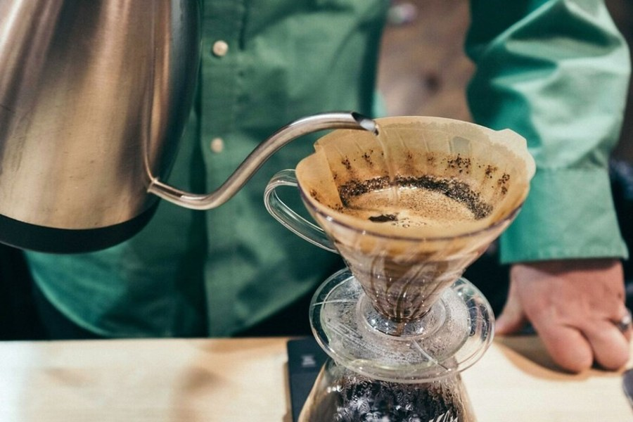

Brewing Methods
Each brewing method brings out a different side of your coffee.

1. Pour-Over
Pour-over is a manual method. You control how fast the water goes through the coffee, so it is a great way to taste the clean and bright flavors of the beans.
- Heat water to about 92–96°C.
- Rinse the paper filter with hot water and throw that water away.
- Add 15 g of medium-fine ground coffee.
- Pour 30 g of water and wait 30 seconds. This is called the bloom.
- Slowly pour in circles until the total water reaches 240 g.
- Wait until all the water drips through (about 3 minutes in total).

2. French Press
The French press is the easiest method for beginners. The metal filter lets the coffee oils pass through, so the coffee feels rich and heavy.
- Add 18 g of coarse ground coffee to the press.
- Pour in 250 g of hot water (about 94°C).
- Put the lid on and wait 4 minutes.
- Press the plunger down slowly and serve right away.

3. Moka Pot
The moka pot pushes hot water up through the coffee with steam pressure. The result is strong coffee that is good for making lattes at home.
- Fill the bottom chamber with hot water, just below the safety valve.
- Fill the basket with fine ground coffee. Do not press it down.
- Close the pot and put it on medium heat.
- When you hear a gurgling sound, take it off the heat.

4. Cold Brew
Cold brew needs no hot water at all, only time. It is perfect for hot summer days in Taiwan, and you can make a big jar for the whole week.
- Mix 100 g of coarse ground coffee with 1000 g of cold water in a jar.
- Stir, cover, and keep it in the fridge for 12–18 hours.
- Filter out the coffee grounds.
- Serve with ice. Add water or milk if it is too strong.
Quick Comparison Table
| Method | Basic Recipe | Taste | ||
|---|---|---|---|---|
| Grind Size | Coffee : Water | Brew Time | ||
| Pour-Over | Medium-fine | 1 : 16 | About 3 minutes | Clean, bright |
| French Press | Coarse | 1 : 14 | 4 minutes | Rich, full-bodied |
| Moka Pot | Fine | 1 : 7 | About 5 minutes | Strong, intense |
| Cold Brew | Coarse | 1 : 10 | 12–18 hours | Smooth, sweet |
Not sure how much water to use? Try our Brew Calculator.
Read more about the French press on Wikipedia.